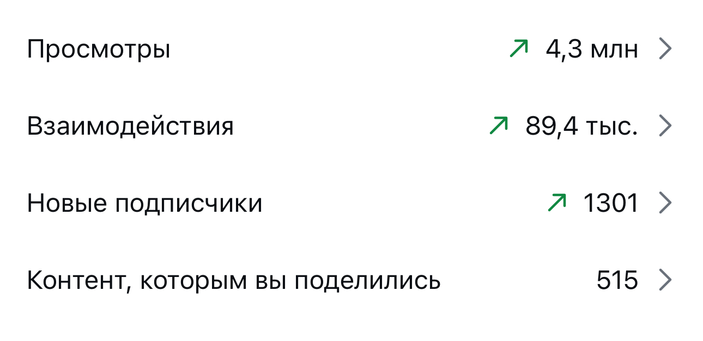

Агенту дали пятьдесят долларов и одну фразу - через двое суток баланс вырос до пяти тысяч
Разбор механики из моего рилса: как устроен автономный агент, который сам читает рынки предсказаний, сверяется с тем, что обсуждают в соцсетях, и сам считает размер каждой ставки по формуле, а не на глаз
Что это и зачем
Речь про рынки предсказаний - площадки вроде Polymarket, где люди ставят на исход конкретного события (решение ФРС, итог матча, будет ли принят закон) и цена контракта отражает, что толпа считает вероятным
В ролике агент на базе Grok не торгует по интуиции. Он раз в десять минут проходит по двум тысячам таких рынков, сверяет цену с тем, что прямо сейчас обсуждают в Твиттере, и берёт в работу только те случаи, где цена рынка и его собственная оценка расходятся больше чем на 8%
Дальше - не «стал бы я туда заходить», а готовая формула на размер ставки. Дальше в гайде - каждый элемент этой механики по отдельности, простыми словами
Шаг 0. Что нужно понимать до старта
Это разбор механики конкретного ролика, а не моя личная опробованная система и не финансовая рекомендация. Я не трейдер и не советник по инвестициям - я показываю, как устроен подход, который сама увидела и адаптировала для рилса
Рынки предсказаний работают на реальные деньги через свой криптокошелёк, доступ зависит от страны, и это капитал, который можно потерять целиком. Если пробуешь - только та сумма, потерю которой можешь пережить спокойно, и своя проверка площадки перед стартом
Что это даёт: дальше по шагам - именно ЛОГИКА решения, а не призыв её повторить не глядя
Пойми, на чём вообще стоит цена
Что это. На рынке предсказаний контракт стоит от 0 до 100 центов, и эта цена - это и есть вероятность, в которую верит рынок. Контракт «да» по 68 центов значит, что толпа оценивает шанс события примерно в 68%
Что это даёт. Если у тебя есть основания думать, что реальная вероятность другая, разница между твоей оценкой и ценой рынка - это и есть потенциальная сделка
Агент сканирует рынки по расписанию, а не по вдохновению
Что это. Раз в 10 минут - две тысячи рынков за один проход. Ни одна сделка не рождается из «мне кажется»
Что это даёт. Систематичность вместо разового решения. Человек физически не удержит внимание на двух тысячах позиций одновременно, агент - да
Сверка с живым спросом в соцсетях
Что это. Помимо цены самого рынка, агент смотрит, что прямо сейчас активно обсуждают в Твиттере по той же теме - резкий рост числа упоминаний часто опережает движение цены
Что это даёт. Второй, независимый источник сигнала. Одна цена рынка без внешней сверки - это просто мнение толпы, которое можно принимать на веру, а можно и нет
Правило 8% - фильтр входа
Что это. Агент открывает позицию только там, где его собственная оценка вероятности расходится с ценой рынка минимум на 8 процентных пунктов
Что это даёт. Отсекает шум. Разрыв в 1-2% чаще всего просто погрешность оценки, а не реальное искажение цены
Критерий Келли - формула размера ставки
Что это. Формула из теории вероятностей 1956 года (Джон Келли, лаборатории Bell): по вероятности выигрыша и коэффициенту она считает, какую долю капитала разумно поставить, чтобы капитал рос быстрее всего в долгую и при этом не обнулился на одной неудачной ставке
Что это даёт. Размер каждой сделки - это не «показалось значимым, поставлю побольше», а результат расчёта по одной и той же формуле каждый раз
Правило 6% - потолок риска
Что это. Даже если чистый расчёт по Келли предлагает долю больше, агент режет её на 6% от портфеля - это жёсткий потолок, а не рекомендация
Что это даёт. Защиту от ситуации, когда формула математически права в среднем, но одна конкретная ставка может обнулить портфель здесь и сейчас
Стоп-кран - когда агент не заходит вообще
Что это. Нет разрыва 8% - нет сделки. Слабый сигнал в соцсетях - нет сделки. Правило работает и как фильтр входа, и как повод НЕ действовать, а не действовать на всё, что движется
Что это даёт. Большинство проходов из двух тысяч рынков заканчиваются вообще без сделки - и это заложено в логику, а не сбой
Где смотреть, если хочешь собрать похожее сам
Такая связка - агент с ИИ-оценкой плюс критерий Келли поверх Polymarket - не единственный в своём роде продукт, это уже целый жанр открытых проектов на GitHub. Несколько живых примеров на сверку 29.09.2026:
guberm/polymarket-bot- оценка через ансамбль моделей плюс размер позиции по Келлиadiiiexe/Polymarket-Bot- лёгкий автономный бот на Python и Grok (xAI)Rancowski/polymarket-desk- оценки Grok плюс жёсткий риск-менеджмент
Это открытый код для своей проверки и экспериментов, не готовое решение под ключ и не рекомендация конкретного репозитория - каждый разбирается и запускается на свой страх и риск, деньги там настоящие
Что происходит с блогом, пока я собираю такие разборы
Пишу про такие находки регулярно, и вот что это даёт блогу на нейросетях за то же время



Три рилса по миллиону и больше. Без рекламы и без команды: производство занимает минуты, время уходит на смысл
Разбор чужой механики - это только начало
Я одна, в декрете, без команды разработки строю системы на нейросетях сама. Разобрать одну механику из чужого ролика - полезно, но собрать из таких находок, промптов и своих готовых цепочек рабочую систему под конкретный проект - это уже не один разбор
Этот гайд закрывает вопрос одной механики. Если строишь целую систему - контент-завод, автоматизацию, продукт на нейросетях - одного разбора мало, нужна архитектура под твою конкретную задачу
На консультации разбираю, как выстроить такую систему у тебя
Напиши слово
мне в личку Telegram
НаписатьМои каналы и страницы